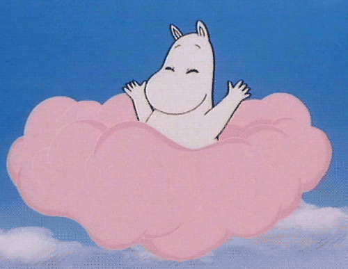

Moomintroll is the son and only child of Moominmamma and Moominpappa. He's friendly, loyal and very brave. Once he saved his friends Sniff and Snufkin from a crocodile!
Moomintroll's best friend is Snufkin, and Snorkmaiden clearly loves Moomintroll. Moomintroll loves being surrounded by family and friends but, he has a number of special places where he goes to think, such as by the pond and under the jasmine bush. Moomintroll loves adventure with a capital ‘A’. He's saved Little My from freezing ice floes and dived down to the seabed to gather pearls for Moominmamma and Snorkmaiden.